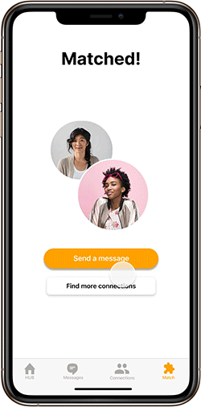
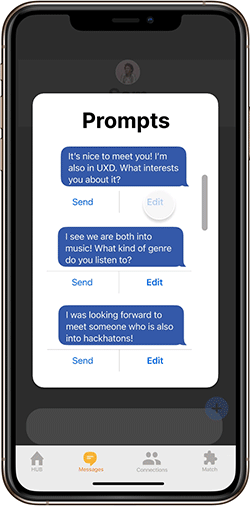

An app designed to help students make both personal and professional connections during online learning. Designed with my team
Sushi on the Moon, consisting of
Stacey Jiang, Murtaza Kerani, Mujgan Ozceylan, and
Ang Xiao. Team members shared equal responsibilities to get a better understanding of the UX design process.
In partnership with the
Innovation Hub at the University of Toronto, this technology-based project for
Fundamentals of User Experience looked to solve a problem within one of five domains based on Innovation Hub's previous research focused on what challenges students are currently facing. Sushi on the Moon decided to tackle
Fostering Connectedness with the aim to help students form long-lasting connections during online learning.
We conducted secondary and primary research to understand our users better. The latter consisted of 14 virtual interviews and 50 questionnaire responses. Once the research was collected and mapped on an affinity diagram, we created the problem statement:
"With increased levels of anxiety and alienation students feel lonely because they don’t know how to create meaningful connections."
We then introduced Linda, our
persona. Linda is a Professional Masters student at the University of Toronto. They're feeling anxious and lonely because they don't know how to create meaningful connections. They want to make long-lasting connections, feel like they're a part of the UofT community, and cultivate their professional network through guidance.
After creating an Empathy Map, we found that Linda's As-Is Scenario consisted of the following steps and pain points:
•
Explore: Making friendships is difficult with online classes
•
Approach: Doesn't know how to find connections or start a conversation
•
Communicate: Feels anxious about sending a message
•
Establish: Doesn't know how to form relationships that go beyond academics
•
Strengthen: Tries to find more things to bond over, worries they're being annoying
From there, we established
Needs Statements and brainstormed
Big Ideas which were subsequently plotted on a
Prioritization Grid. After narrowing down the ideas, we decided to focus on four features:
house-style group chats,
individual matching profiles,
message prompts, and
event ideas. Linda's new
To-Be Scenario would then consist of the following steps:
•
Joins: Joins one platform for finding UofT connections
•
Introduces: Sorted into mutual interest groups, matches with like-minded individuals
•
Connects: Uses tailored prompts to start a conversation
•
Strengthens: Easy access to event ideas to further connections
After creating
Paper Prototypes, we conducted the first round of initial
Usability Tests before moving on to the
Medium-Fidelity Prototype, as seen below. Hover for full explanations.
Registers with UofT ID. Fills in profile including connection type preferences, preferred group chat size, and if they'd like to make their UofT information private.
Clicks Next |
Fills in interests for passions and skills.
Clicks Next |
Fills in what they want to learn.
Clicks Next |
Gets sorted into a house based on interests and joins the house group chat. Views other members.
Clicks View Members |
Views their current matches (only house members so far). Then goes to match with an individual.
Clicks Next |

Opens up chat window with new match and clicks on prompts button.
Clicks Edit |

Edits prompts and sends in their chat.
Clicks Home |

Views Professional Events with suggestions tailored to their intersts.
Clicks View Details |
Views event details and shares it with a match.
End |
We conducted further
Usability Testing which consisted of observational and interview techniques on qualified users. From there, we were able to decide on our next steps, which will be updated in our
High-Fidelity Prototype. Once updated, we will conducted further testing.
• Improve the onboarding experience to show the intention behind each feature and introduce tools available in the app
• Simplify how users add interests and skills, also allow users to fill it out right after they create their profile
• Improve the User Interface to make the experience more intuitive and in line with mental models
• Redesign the events feature and consider combining it with pre-existing events on CLNx or with games/study session and promote student-led events that are exclusive to the app
• Keep updating, refining and polishing the user flows and user interface.
As this was my first UX Design project, in the future I know I'd like to focus less on features, as these were overly abundant and sometimes felt as if they might be deviating too much from the main focus of the app.